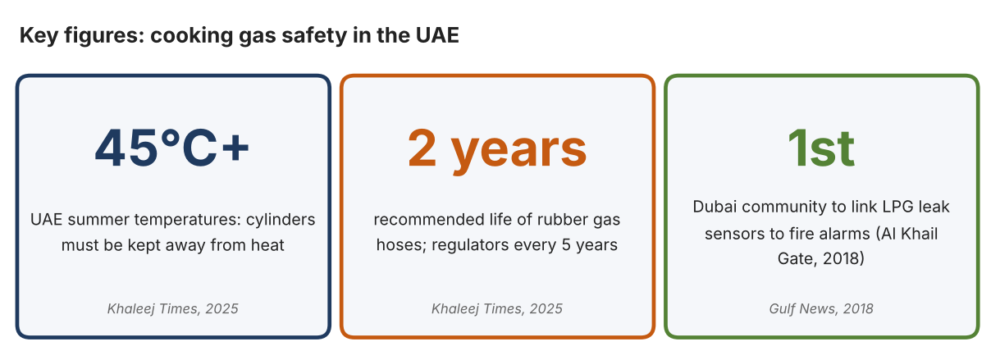
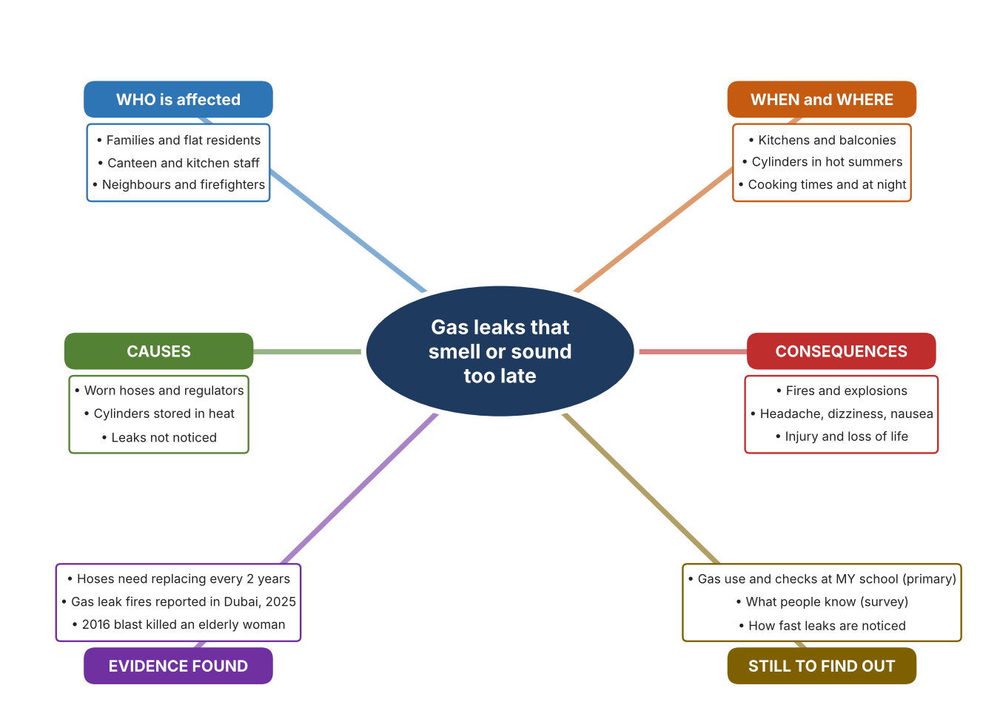
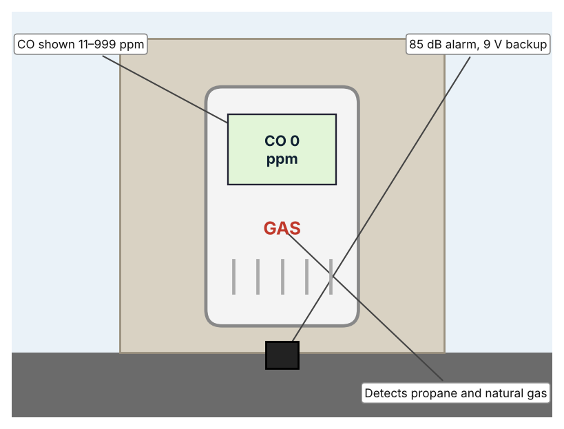
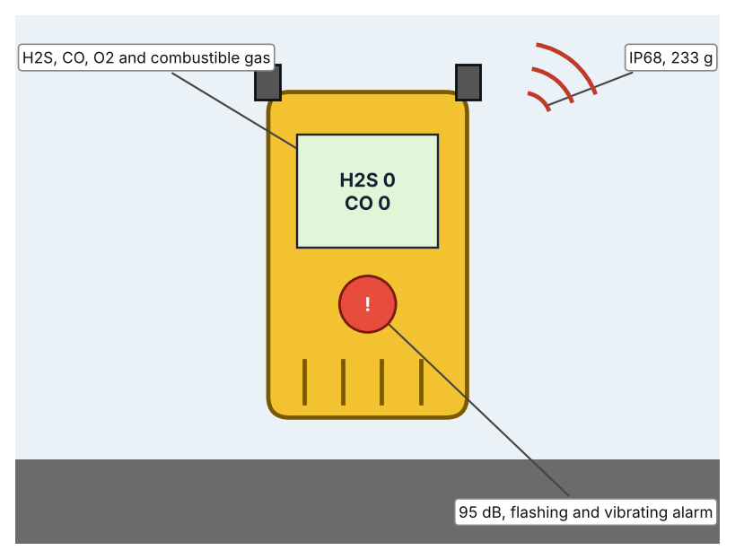
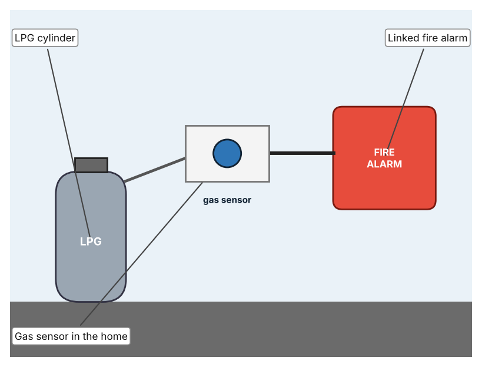

A1 · Design need
Identify and explain the problem faced by your client and community.
My client is the Community Service Committee of a Dubai school, represented by its teacher coordinator. The committee supports families who live near the school, where many homes and food outlets cook with gas, and it has been asked to help residents stay safe. It needs the risk of gas leaks to be reduced and needs leaks to be detected early enough for people to act.
The people most affected are families in homes and flats that use gas cylinders or gas pipes, because a leak can build up unnoticed. Staff in kitchens and food outlets are a second group, because they use gas for many hours a day. Neighbours and firefighters are a third group, because a leak can spread beyond one home.
The need is real because gas leaks have caused fires in Dubai. Khaleej Times reported in 2025 that recent gas leak fires had been reported in Dubai, and advised that rubber hoses be replaced every two years and regulators every five, that cylinders be kept away from heat in summer temperatures above 45°C, and that warning signs include a rotten-egg smell, hissing, headaches, dizziness and a weak flame (Zakir). In 2018 Gulf News described a community where a gas blast in August 2016 had killed an elderly woman and burned her daughter, after which leak sensors linked to fire alarms were installed (Saseendran). The first article gives no casualty figures and the second is from 2018, so I need to find out about my own area.
Figure 1 summarises the key numbers. The articles describe particular incidents and give advice rather than statistics, so I treat them as a pattern and not as proof about my neighbourhood. In my own words: a gas leak gives only a short chance to react, and it may be a smell that someone has stopped noticing. Figure 2 is my mind map of the problem.
315 words


A2 · Research plan
Six research questions of different types, each with a priority, a research type and evidence.
| # | Question | Priority | Primary / secondary | Evidence | Brief answer |
|---|---|---|---|---|---|
| 1 | Factual: What causes gas leak fires in the UAE, and what do experts advise? | High | Secondary | Khaleej Times, 16 May 2025 (Appendix A, Source 1) | Worn hoses and regulators, cylinders in heat or closed cabinets; replace hoses every two years and regulators every five; test with soapy water; if there is a leak, open windows, shut the cylinder, leave and call 997. |
| 2 | Factual: What happened in a Dubai community that installed gas sensors? | High | Secondary | Gulf News, 1 Nov. 2018 (Appendix A, Source 2) | Al Khail Gate in Al Quoz linked LPG leak sensors to fire alarms after a 2016 blast killed an elderly woman; it also moved to composite cylinders that withstand twice the burst pressure. |
| 3 | Conceptual: How do gas detectors sense a leak, and how do they warn people? | Medium | Secondary | Kidde page (Source 3); Honeywell datasheet (Source 4) | A metal-oxide sensor detects natural gas or propane and an electrochemical sensor detects carbon monoxide; alarms sound at 85–95 dB and some units also flash and vibrate. |
| 4 | Debatable: Should gas safety rely on people checking equipment, on detectors in the home, or on systems linked to fire alarms? | Medium | Secondary | Appendix A, Sources 1, 2, 3 and 4 | Checking costs nothing but people forget; a detector warns people nearby; a linked system protects a whole community but costs more. My view: detectors give the earliest warning. |
| 5 | Debatable (challenges my assumption, UAE source): New UAE buildings must have central gas systems, so gas cylinder safety is not a current problem. | High | Secondary | Khaleej Times, 2025 (Source 1) | Dubai Civil Defence regulations require central gas systems in all new buildings, but the 2025 article reports recent leak fires and advises cylinder users, so older buildings and cylinders remain a risk. I need local evidence. |
| 6 | Factual (primary): How do homes and outlets near our school use gas, and what checks and warnings do they have? | High | Primary | Own gas-use checklist and survey (Appendix A, Sources 5 and 6) | [Student data needed: write the checklist results (with permission) and survey averages, then two sentences on the pattern you see.] |
A3 · Existing products
Three significantly different products, each analysed with ACCESS FM, with pros and cons.
Product 1: Plug-in CO and gas alarm (Kidde KN-COEG-3)

Illustration by the author based on the Kidde 900-0113 page, Kidde (Appendix A, Source 3). [Student: replace with a photo from the source, cited MLA 9]
Product 2: Portable multi-gas detector (Honeywell BW Clip4)

Illustration by the author based on the BW Clip4 datasheet, Thermo Fisher (Appendix A, Source 4). [Student: replace with a photo from the source, cited MLA 9]
Product 3: Community LPG leak-sensor system (Al Khail Gate, Dubai)

Illustration by the author based on Saseendran, Gulf News (Appendix A, Source 2). [Student: replace with a photo from the source, cited MLA 9]
ACCESS FM analysis
| ACCESS FM | Product 1 | Product 2 | Product 3 |
|---|---|---|---|
| Aesthetics | White plug-in unit with a digital display; no other styling described (Kidde). | Compact clip-on unit; look not described (Thermo Fisher). | Sensors in apartments; look not described (Gulf News). |
| Cost | Price not shown (Kidde). | Price not listed (Thermo Fisher). | Cost not stated (Gulf News). |
| Customer | Households that use propane or natural gas. | Workers who need personal gas monitoring. | Residents of a whole community. |
| Environment | 120 VAC plug-in with 9 V backup; UAE mains is 230 V, so I must check compatibility before relying on it. | Two-year continuous battery. | Not described. |
| Size | Size is not shown. | 11.9 × 6.8 × 3.2 cm; 233 g. | Installed across a community; size not stated. |
| Safety | 85 dB alarm; 5-year limited warranty. | 95 dB audible alarm plus visual and vibrating alarms; IP68. | Triggers a fire alarm; still being installed in 2018. |
| Function | Detects CO (electrochemical) and gas (metal oxide) and shows ppm with peak memory. | Detects hydrogen sulfide, carbon monoxide, oxygen and combustible gases. | Detects LPG leaks and triggers a fire alarm. |
| Materials | Materials are not stated. | Materials are not stated. | Composite cylinders are used instead of metal ones. |
Pros and cons
| Product 1 | Product 2 | Product 3 | |
|---|---|---|---|
| Pro | Detects two kinds of danger at once and shows readings. | Detects four hazards and is waterproof. | Protects a whole community and removes metal cylinders. |
| Con | Designed for 120 V, so it may not suit UAE sockets without a check. | Intended for workers, and the price is not listed. | Costly to install and the article does not give the cost. |
A4 · Design brief
Restate the need, summarise the research and the existing products, and state the design intent.
My client, the Community Service Committee of a Dubai school, needs the risk of gas leaks to be reduced and leaks to be detected early enough for people to act. The problem is real: gas leak fires were reported in Dubai in 2025, and experts advise replacing hoses every two years and keeping cylinders away from heat above 45°C (Appendix A, Source 1). A 2016 gas blast in a Dubai apartment killed an elderly woman and burned her daughter (Appendix A, Source 2).
My research shows that leaks are often caused by worn parts and heat, and that the first sign may be a smell or sound that people miss (Appendix A, Sources 1 and 2). The articles give advice and incidents, not counts, so I need my own evidence. My debatable questions led me to decide that checking, detectors and linked systems each cover only part of the problem, and my challenged assumption (that central gas systems in new buildings remove the risk) showed me that older buildings and cylinders remain. I will gather my own evidence with the gas-use checklist and the survey, always with permission (Appendix A, Sources 5 and 6).
I analysed three very different existing solutions. A plug-in alarm detects carbon monoxide and gas and sounds at 85 dB, but it is made for 120 V and I must check it suits UAE sockets (Appendix A, Source 3). A portable detector senses four hazards with a 95 dB alarm and an IP68 body, but it is made for workers and the price is not listed (Appendix A, Source 4). A community system links gas sensors to a fire alarm and removes metal cylinders, but its cost is not stated (Appendix A, Source 2). They give me three ideas for inspiration: detecting at home, detecting on a person, and linking to an alarm. Each has a weakness that another covers.
My design intent is therefore to create a solution that senses a harmful gas leak and warns people clearly before it becomes dangerous. It must be affordable, easy for families to understand, reliable for long periods, and safe around gas. I have deliberately not fixed what form it will take. That decision will be made in Criterion B, after I analyse my own checklist and survey against the evidence in Appendix A.
386 words
Appendix A · Research notes and sources
Secondary sources in MLA 9, with notes and where each source is used.
| # | Source (MLA 9) | Key notes | Used in |
|---|---|---|---|
| 1 | Zakir, SM Ayaz. “UAE: Residents Urged to Take Precautions after Gas Leaks Cause Fires.” Khaleej Times, 16 May 2025, www.khaleejtimes.com/uae/gas-leaks-fire-residents-precautions. Accessed 21 Oct. 2026. | Recent gas leak fires in Dubai (no casualty figures); hoses every two years, regulators every five; summer above 45°C; soapy-water test; warning signs; Dubai Civil Defence requires central gas systems in new buildings; the advice is general expert advice. | A1; A2 Q1, Q4 and Q5; A4. |
| 2 | Saseendran, Sajila. “Dubai Community Gets Sensors to Detect Cooking Gas Leakage.” Gulf News, 1 Nov. 2018, gulfnews.com/uae/dubai-community-gets-sensors-to-detect-cooking-gas-leakage-1.2132784. Accessed 21 Oct. 2026. | Al Khail Gate, Al Quoz; LPG sensors linked to fire alarms; August 2016 blast killed an elderly woman and burned her daughter; composite cylinders; cost not stated. Source is from 2018. | A1; A2 Q2 and Q4; A3 Product 3; A4. |
| 3 | “AC Plug-in Carbon Monoxide, Propane & Natural Gas Alarm with Digital Display (900-0113).” Kidde, kidde.com/fire-safety/en/ca/products/carbon-monoxide-alarms/900-0113. Accessed 21 Oct. 2026. | KN-COEG-3; CO electrochemical (11–999 ppm), gas metal oxide; 85 dB at 10 ft; 120 VAC; 9 V backup; peak memory; 5-year warranty; price not shown. | A2 Q3 and Q4; A3 Product 1; A4. |
| 4 | “BW Clip4 Multi-Gas Detector.” Honeywell, documents.thermofisher.com/TFS-Assets/ANZ/Datasheets/honeywell-bw-clip-4-multi-gas-detector.pdf. Accessed 21 Oct. 2026. | H2S, CO, O2 and LEL; two-year continuous battery; visual, vibrating and 95 dB alarms; IP68; 11.9 × 6.8 × 3.2 cm; 233 g; two-year warranty; price not listed. | A2 Q3 and Q4; A3 Product 2; A4. |
| 5 | Primary: gas-use checklist, completed by the student on [date]. Accessed own data. | [Student: summarise your counts.] | A2 primary question; A4. |
| 6 | Primary: survey of [number] people, completed on [date]. | [Student: summarise your averages.] | A2 primary question; A4. |
Primary research instrument 1: gas-use checklist
Student records what gas equipment exists and how it is checked, with permission and an adult present, and never touches equipment.
| Place | Gas type (cylinder/pipe) | Hose or pipe age known (Y/N) | Leak alarm present (Y/N) | Ventilation (Y/N) | Notes |
|---|---|---|---|---|---|
| School food room | |||||
| Canteen | |||||
| Home 1 (with permission) | |||||
| Home 2 (with permission) |
Primary research instrument 2: survey
Rate each statement from 1 (strongly disagree) to 5 (strongly agree). Collect responses with permission and record no names.
| Statement | 1 | 2 | 3 | 4 | 5 | Total responses |
|---|---|---|---|---|---|---|
| I can tell when there is a gas leak by smell. | ||||||
| I know what to do if I smell gas. | ||||||
| The gas hoses or pipes in my home are checked regularly. | ||||||
| I would feel safer with a gas leak alarm. |